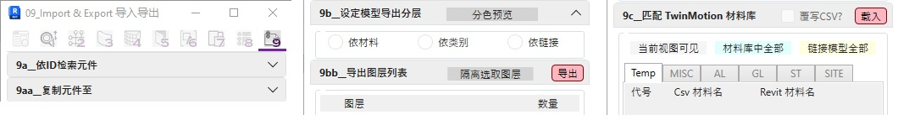

09页签目前已制作三个主要工具:
a. Search By ElementID 依ID检索元件 /
解决Revit无法复制其他档案视图和图纸的问题
Copy Element To File 复制元件至其它档案
将所选视图放入新建或现有的图纸空间并自动定位排版
b. Set Up Export Layers 设定模型导出分层 /
List Filtered Layers 导出图层列表
解决Revit自带隔离工具无法作细项筛选的问题
依所选分类方式列出分色清单以作快速隔离并导出Twinmotion档案供渲染使用
c. Match TwinMotion Material 匹配 TwinMotion 材料库
解决Revit与Twinmotion材料库无法快速匹配的问题
依所载入的材料匹配表单根据当前模型进行自动检查并重新导出